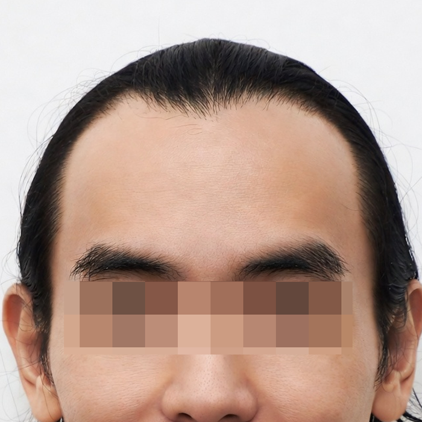
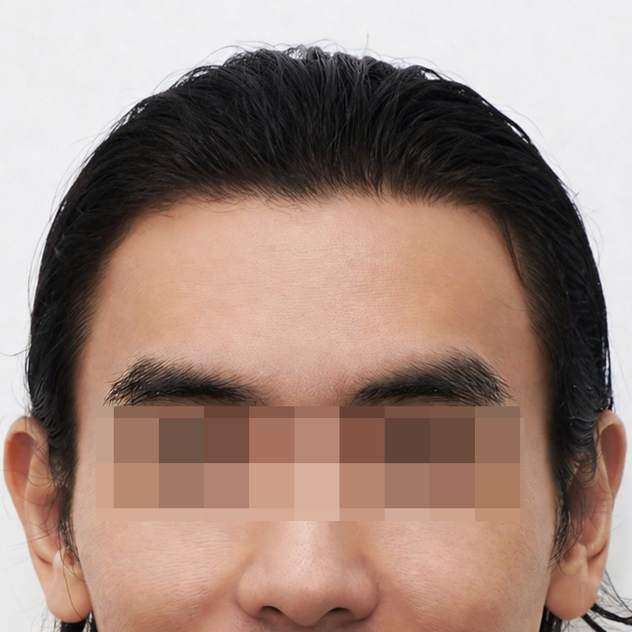
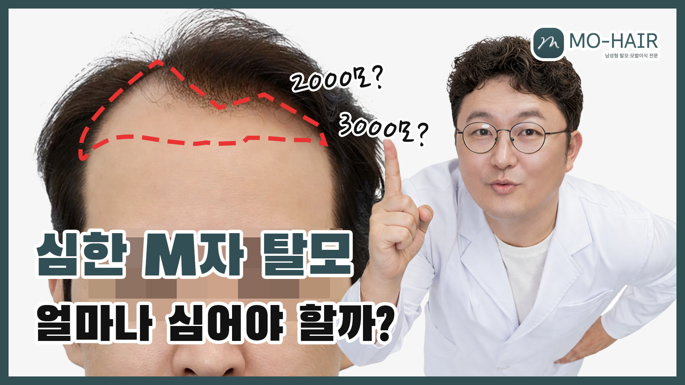
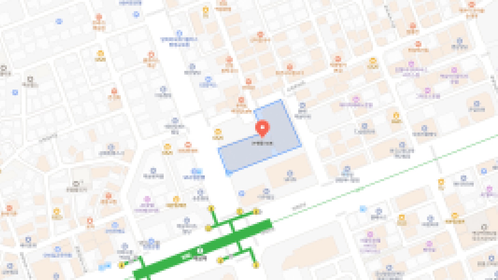

절개 모발이식
뒤쪽 두피를 얇게 절개해 모낭을 한 번에 채취하는 방식으로, 많은 양을 이식해야 할 때 적합합니다.
남성형 탈모·모발이식 전문
Pricing
비절개·절개 기준 대표 안내입니다. 상세는 상담 시 안내드립니다.
| 시술 유형 | 모발 수 | 대표 금액 |
|---|---|---|
| 비절개 | 2,000모 | 399만 원 |
| 절개 | 2,000모 | 299만 원 |
디자인·밀도 등에 따라 변동 가능합니다.
Cases
대표 사례를 만나보세요.

BEFORE
AFTER* 개인별 치료 결과는 차이가 있을 수 있습니다.
* 사진은 환자 동의 하에 게재되었습니다.
Physician
풍부한 임상 경험과 세심한 상담으로, 환자분께 맞는 모발이식을 설계합니다.
남성형 탈모의 진행 단계와 두피·모발 특성을 함께 살피며, 헤어라인부터 총 모낭 수·밀도까지 한 흐름으로 설계합니다. 일상과 직업에 어울리는 자연스러운 결과를 목표로, 상담 단계에서 기대와 우려를 충분히 나누고 시술 방향을 함께 정합니다.
대한모발이식학회 정회원으로서의 학회 활동과 오랜 임상 경험을 바탕으로, 과장 없이 환자분에게 가장 적합한 선택을 차분히 안내합니다.
Procedures
방식·부위별 시술과 상담·관리 프로그램을 단계별로 안내합니다.
뒤쪽 두피를 얇게 절개해 모낭을 한 번에 채취하는 방식으로, 많은 양을 이식해야 할 때 적합합니다.
두피를 자르지 않고 모낭을 하나씩 채취하는 방식으로, 흉터와 회복 부담을 줄이고 싶은 분들께 권장합니다.
겉으로 티 나지 않도록 머리카락을 거의 자르지 않고 진행하는 비절개 모발이식입니다. 일상 복귀가 빠른 편입니다.
넓은 이마나 뒤로 밀린 헤어라인을 얼굴형에 맞춰 자연스럽게 디자인합니다.
정수리·가마 부위의 빈 곳을 촘촘하게 채워, 위에서 보이는 휑한 느낌을 줄여줍니다.
눈썹, 수염, 헤어라인 흉터 등 특정 부위의 빈 곳을 세밀하게 보완하는 시술입니다.
두피 상태와 탈모 진행 정도를 진단하고, 필요한 모수와 시술 방법을 설계합니다.
세척, 연고·약 복용, 재생 관리 등 회복 과정 전반을 단계별로 케어합니다.
탈모 진행 속도에 따른 추가 관리, 약물·생활습관 코칭을 함께 제공합니다.
| 구분 | 절개 | 비절개 | 무삭발 비절개 |
|---|---|---|---|
| 채취 | 후두부 얇게 절개 후 다발 채취 | 절개 없이 모낭 단위 채취 | 비절개와 동일, 삭발 최소 |
| 장점 | 다량 모낭 확보에 유리 | 선형 흉터 부담 완화 지향 | 겉으로 티 적고 일상 복귀 빠름 |
| 권장 | 많은 모수가 필요한 경우 | 흉터·회복 부담을 줄이고 싶을 때 | 노출·업무상 삭발이 부담일 때 |
Story
영상과 글로 클리닉 이야기와 시술 안내를 만나보세요.

Location
예약 및 방문 문의를 환영합니다.
